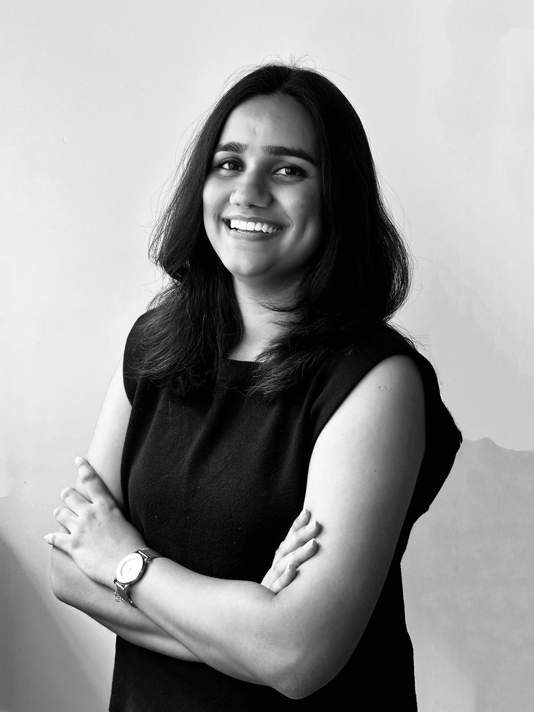
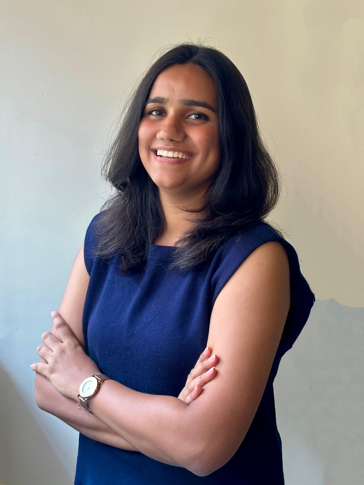

About
Ar. Palak Joshi
Architect and medical planner in Mumbai, interested in how buildings are planned, detailed and delivered.


- Based in
- Mumbai, India
- Current role
- Junior Architect & Medical Planner, Language.Architecture.Body
- Education
- B.Arch, Aditya College of Architecture, 2024
- Registration
- Council of Architecture, India
CA/2025/183709
I see architecture as more than making spaces. It is a way of understanding the systems, people and ecologies that shape our cities. My work sits where rapid urbanisation, scarce resources and social vulnerability meet, and looks for fairer, more resilient ways for cities to grow.
I work through research, drawing and spatial exploration, across scales and disciplines, to question how things are and imagine how they could be. Every design decision has social, ethical and environmental consequences, and I try to keep those in view.
For me, the city is not just something to design. It is a living system to understand, negotiate and change.
Education
| 2019–2024 | Bachelor of ArchitectureAditya College of Architecture, Mumbai · CGPA 8.99 · First in class |
| 2017–2019 | Higher Secondary CertificateSt. Xavier's College (Autonomous) |
| 2004–2017 | Secondary School CertificateSt. Teresa's Convent Higher Secondary School, Jalgaon, Maharashtra |
Skills
Software
- AutoCAD
- Revit
- SketchUp
- V-Ray
- Lumion
- Adobe Photoshop
- Adobe InDesign
- Adobe Illustrator
- Microsoft Office
Practice
- Medical planning
- Construction documentation
- Material specifications
- Green building calculations
- IGBC documentation
- Site documentation
- Presentation and panel design
By hand
- Sketching
- Graphic design
- Model making
- Writing
- Research